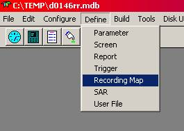
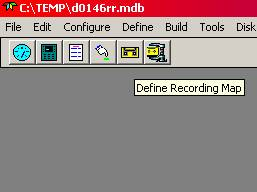
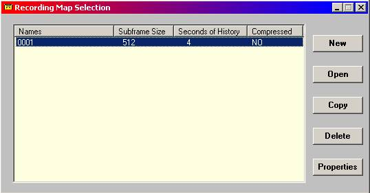
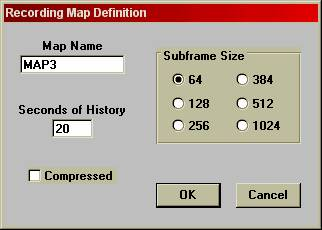
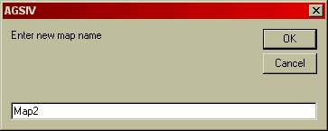
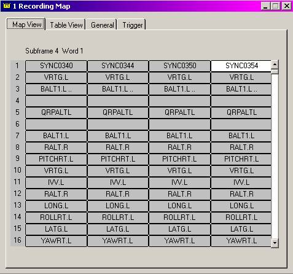
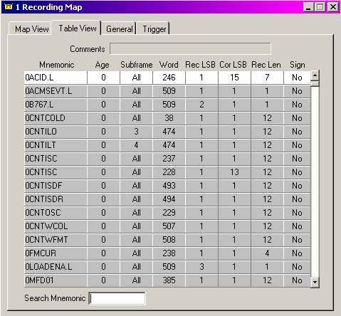
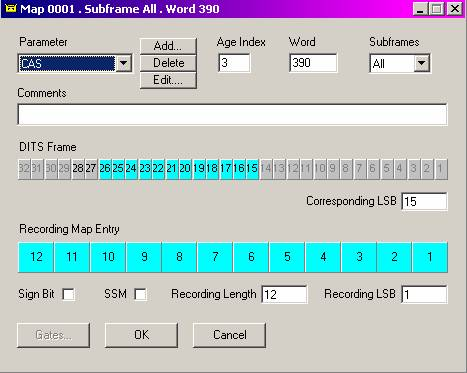
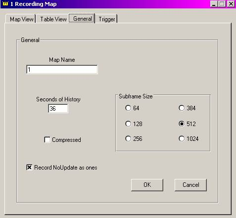

Overview
One of the basic functions of a data acquisition system (ACMS) is to record the incoming data without any interpretation. In most cases this is the raw data without conversion to engineering units. Since most acquisition systems generate values of their own, called derived or internal parameters, it is also possible to record these values.
The recorded raw data is subsequently transcribed on the ground for purposes of maintenance and flight operations.
The device onto which this data is recorded varies from one installation to another. The most common devices are stand-alone tape or optical disk recorders. However, it is also possible to record onto the internal ACMS recorders, such as optical disks and PCMCIA cards integrated into data acquisition units. Another possibility is to record onto the internal memory of the ACMS, during the flight, and transfer the data to a floppy disk with one of the following devices after the flight:
· Airborne Data Loader (ADL),
· Portable Data Loader ( PDL),
· Multi-Destination Disk Unit (MDDU),
· Integrated Disk Drive IDD,
· Floppy Disk Interface FDI
Regardless of the recording media, the specification of how the data is to be recorded is the same and is described in the remainder of this chapter. In cases where data is recorded in memory, for later transfer to disk, in addition to this specification, reports must also be defined, to act as containers for the raw data, until the transfer to disk. The definition of such containers is described in the chapter on Reports.
Note that recording to the Flight Recorder, also referred to as the Crash Recorder or Accident Recorder, is NOT a function of an ACMS system and therefore not covered in this chapter.
Recorded Data Format
Subframes
Based on ARINC 717 Standard, raw data is recorded in packets called subframes. Each subframe represents one second of recorded data and consists of a number of 12-bit words. The number of words in a subframe can be selected to be 64, 128, 256, 384, 512, or 1024.
As the size of the subframe (number of words per subframe) also determines the transmission rate (number of words per second), it is important to take the capabilities and the capacity of the recorder into consideration when selecting the subframe size. For example, in-memory recording is seldom done with subframes larger than 64 words, while optical disk recording can use the largest of subframe sizes.
Each word in a subframe can hold a 12-bit parameter or a combination of parameters with fewer bits. If more than 12 bits of a parameter need to be recorded, then the parameter must be split into two or more words. The position of a word in the subframe and the subframe sequence in a frame (see Frames) identifies the contents of the word (and thus the parameters contained in the word).
The first word in every subframe does not contain any data, but a special bit pattern called the synchronization word. This is used to identify the beginning of the subframe. In each recording, four unique synchronization patterns are used, each identifying one subframe.
A parameter’s recording rate is independent of the acquisition rate, though it does not make sense to record a parameter more frequently than it is acquired. If a parameter is to be recorded in 12 bits at a once per second rate, then it will require only one word position. If more samples of the parameter are to be recorded, then more words need to be allocated.
Frames
To support parameters that have a slow rate of change and do not need once per second recording, the recording format also allows the recording of parameters once every two seconds or even once every four seconds. This is done by using the same word location for two different parameters, alternating the value every other second, or using the word for four different parameters each one recorded every fourth second. This results in a minimum recording rate of one sample every four seconds.
Regardless of how this alternation is done, each subframe will hold the same parameters as the subframe recorded four seconds earlier. The sequence of the four, possibly different, subframes is called a “frame”.
This is why a different synchronization word (sync word) is used for each of the four subframes, to distinguish the four subframes in a frame.
Super Frame Recording
Recording data once every four seconds might still be unnecessary and wasteful for parameters that rarely change during flight. Examples of such parameters are the departure and destination codes, flight date, or aircraft registration. In these cases, one may use the trigger logic to multiplex amongst several slowly changing parameter and copy them to another (internal) parameter which is actually being recorded at regular, four second, intervals. This form of recording, called Super-Frame recording, though not a feature of the recording subsystem of the ACMS, is superimposed on it by the help of the trigger logic.
As an example, an internal parameter called SUPER1 may be recorded once every four seconds (a waste of recording resources to do it any more often). For the 1st four seconds, using the trigger logic, the departure station code might be copied into this parameter. During the 2nd four seconds, using the trigger logic, the destination station code may be copied into SUPER1, and during the 3rd four seconds, again using the trigger logic, the month and the day may be copied, etc. The parameters that are copied into SUPER1 and recorded in such a way are called Super Frame parameters. In the above example, if 16 such super frame parameters are recorded, then it will take 64 seconds for the cycle to repeat; thus, each parameter will be recorded once every 64 seconds.
There is nothing special about the number 16, any number of parameters may be multiplexed into a super frame; however, traditionally, the super frame cycle has been set to a power of two, such as 16, 32, 64, 128, etc.
Incremental Recording
Usually raw data recording is started a few seconds before the first engine is turned on and continues until a few seconds after the last engine is turned off. The switching of the recording, on and off, is done by the trigger logic, to be described in a later chapter. In situations where the recording media must be conserved, it is possible to turn recording on and off also during the flight. This on/off control of recording can again be accomplished by the trigger logic. Because parameters can have history buffers, it is possible to trigger the recording of data, based on events, to appear to start BEFORE the occurrence of that event. As an example, one might start recording one frame (four seconds) before the first engine start, continue recording until cruise, and then record only if an exceedance is detected. In the case of an exceedance, the recording can be specified to start two frames (8 seconds) before the exceedance and continue for 4 frames.
Specifying the Frame and the Subframe
The ACMS specified by AGS IV support the definition of multiple frame layouts; each frame layout definition is called a Map. Different maps can be used for different recording devices, or more than one map can be used for a single device, with the maps being switched under different flight conditions. In this case, each map should have a unique identifier recorded in the frame, to allow for identification and interpretation of the recorded data.
To define a recording map, (regardless of the recording device),
from the Define pull down menu, the Recording Map option should
be selected, or equivalently, the recording button on the toolbar should be pressed
(see Figure 4.1). Note the SAR option is
not available for iDMU.
 
Figure 4.1: Main Menu and Toolbar with Define
Recording Map selected.
Once this selection is made, a new window is opened, containing a list of all maps previously defined (see Figure 4.2). Next to this list is a set of buttons that enable the user to:
define  maps,
maps,
existing maps for display or modification of the frame content,
 one map definition into another,
one map definition into another,
a defined map,
change of the map; e.g. the subframe size.

Figure 4.2: Recording Map Selection Window.
Following are the detailed explanations of each of the map manipulation buttons shown in Figure 4.2:
 - This selection first inquires for a map name (see Figure 4.3). Traditionally numeric
values have been used to specify map names, but it is more descriptive to use
alphabetic designations.
- This selection first inquires for a map name (see Figure 4.3). Traditionally numeric
values have been used to specify map names, but it is more descriptive to use
alphabetic designations.

Figure 4.3: Recording Map Properties Window.
Here is an explanation of the remaining fields of Figure 4.3 window:
Subframe Size
The desired subframe size should be selected from the available options. This selection should be based on the capacity and the capabilities of the recording system, as described before.
Seconds of History
This is an integer that must be a multiple of 4. This is the maximum number of seconds prior to an event that the recording can be started (for example, if this value is set to 12, one can specify, in the trigger logic, for the recording to start from 1, 2 or 3 frames before the occurrence of an event). If continuous recording is to be done during flight, this value can be set to 0, as no event driven recording is necessary. If event driven or “Incremental” recording is anticipated then the value recommended is 20 to 40, as larger numbers would be wasteful of memory (see section on incremental recording).
Once the Figure 4.3 form is completed, a map form will be displayed for data entry. The two variations of the map are described later in this chapter.
- To open a recording map for display or modification, the map name (or number) must be selected from the list of maps in the system. Once the map is opened, the frame definition can be modified, as described later in this chapter.
- This function creates a new map, while copying information from an
existing map. To copy a map, first select the existing map. Next click the  and enter the new map name when prompted (see
Figure 4.4). The definition of the new map can be modified as desired.
and enter the new map name when prompted (see
Figure 4.4). The definition of the new map can be modified as desired.

Figure 4.4: Recording Map Copy
- To delete a map, select the map name (or number), click the button, and confirm the deletion.
- This function allows the recording map properties to be modified, i.e. subframe size and history buffer size. The format of this Window is similar to that of Figure 4.3.
Maps and Their Definition
Once a map is selected, it will show one of two possible views of the selected map, namely: the Map View or the Table View. There are also two additional tabs: General and Trigger.
shows four columns, each representing one subframe (see Figure 4.5). Each row in a column represents one word of the subframe. The parameter name displayed in a word slot is the name of the parameter to be recorded in that word. If more than one parameter has been specified for a word slot, the first parameter name is followed by “...”. If the cursor is moved to a word slot that shows “...”, after a short pause, a temporary box appears listing the names of all parameters recorded in that word slot. A word slot can be ‘cut’ or ‘copied’ by clicking once on the word slot, then choosing ‘Cut’ or ‘Copy’ from the Edit menu. The contents of the word slot can then be ‘pasted’ into a new empty word slot by choosing ‘Paste’ from the Edit menu. By double clicking on a word slot, a window will appear (see Figure 4.7) that allows the entry or modification of data recorded in that word slot.

Figure
4.5: Recording Map (Map View Shown)
shows a list of all parameters to be recorded in the map, and their detailed specification, in alphabetic order (see Figure 4.6). By clicking on a parameter, a window appears (see Figure 4.7) allowing changes to the specification for the word that contains that parameter.

Figure 4.6: Recording Map (Table View
Shown)
Once a word is selected, either from the Map View or the Table View, a word definition form appears (see Figure 4.7) where the parameters (already) defined for that word are displayed. Other parameters may now be added by selecting a name from a pop up list, or any of the specified parameters may be deleted from the word.

Figure 4.7: Recorded Parameter Properties
Window. Bits 15 to 26 of the DITS Frame are
recorded in bits 1-12 of the subframe word.
For each parameter in the list of parameters recorded in a word, the following information must be completed:
Add Button
"Add" is used to add a parameter to that particular word.
Delete Button
"Delete" is
used to delete a parameter from the word.
Edit Button
"Edit" is used
to modify the definition of the displayed parameter.
Subframes Selection
This is a drop-down list box. If the “All” option is selected, the corresponding parameter will be recorded in this word location in all subframes (this leads to once per second recording). If subframes 1, 2, 3, or 4 are selected, the parameter will be recorded in the word location of the corresponding (i.e. 1, 2, 3, or 4) subframe, once every four seconds. If subframes “1&3” or “2&4” are selected, the parameter will be recorded in this word location, every other second in the specified subframes.
Age Index
An integer representing the sample number of the parameter acquired in the current second. Parameters acquired once per second have only one sample available for recording, but parameters acquired more frequently can have 2, 4 or more samples available for recording in each subframe.
For parameters that are recorded once per second or less frequently, this field can be left blank (or a zero entered) which indicates the current sample. For parameters that are to be recorded more than once per second, say 8 times per second, the parameter must be called out 8 times, and assigned to different word locations (multiple samples of parameters needing only a few bits can be packed in a single word). In the case of different locations, the first location could hold the 8th oldest sample or a sample with an age index of 7. The second word allocated to this parameter will be specified with an age index of 6, and so on until the last word location will hold the current sample of the parameter, which will have an age index of zero.
Sign Bit
Bit 12 of the recorded word is reserved for the sign bit of the signed parameters. Checking the Sign Bit box assures that the sign of the parameter is copied to bit 12. Other data may be recorded on bit 12 if it is not used for sign bit recording.
SSM
For FDIMU only. Checking the SSM box assures that the parameter SSM (bits 31-30) will be recorded in two consecutive bits of the subframe word (there must be two available bits for recording.
Comments
This is used for documentation purposes and has no effect on the airborne application. This field can be used, say, to justify why not all significant bits of the parameter are recorded.
DITS Frame and Recording Map Entry
These two lines allow the specification of bits that are to be selected from the acquired parameter (first line) and where in the recorded word are these bits to be positioned (second line). To do this, first the parameter bits should be selected by dragging the cursor on the desired bits. Next, the position of the least significant bit should be marked in the recorded word. Once this is done, the remainder of the bits will be automatically highlighted. The bits selected in the parameter or their position in the recorded word can be changed as desired.
Recording Length, Corresponding LSB and Recording LSB
An alternative to the highlighting method is to specify the Recording Length, the Corresponding LSB, and the Recording LSB respectively in the fields provided on the form.
The Word position of the parameter can also be changed from this screen.
Once all the parameters of the word are defined, the button can be used to exit the screen. If any conflicts are detected because of overlapping words or bits, the system will indicate them with pop-up boxes.
displays the properties of the recording map, which can be changed. Included are Map Name, Seconds of History, Subframe Size, and whether to record parameters with NoUpdate status as ones or zeros. See Figure 4.9.

Figure 4.9: General Tab of a Recording Map.